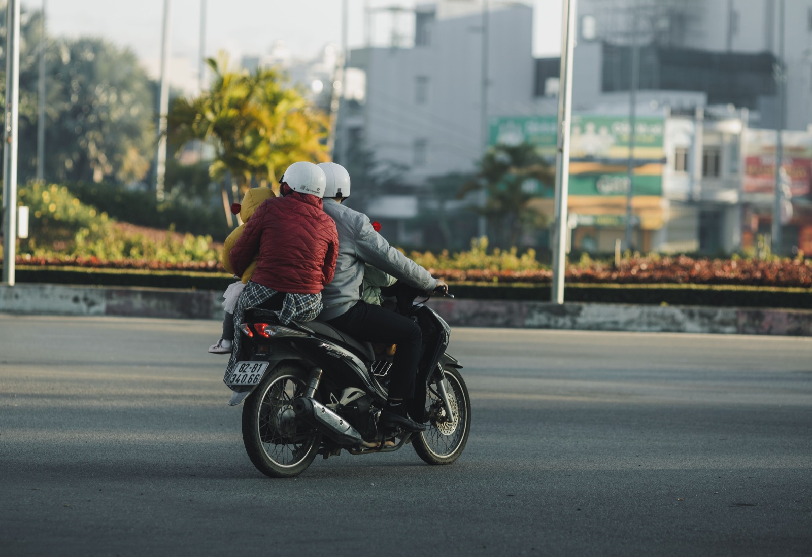

Как выбрать шлем для байка во Вьетнаме
Шлем покупают не по цвету и не по надписи на коробке. Важно, чтобы он подходил по размеру, не прокручивался на голове, нормально застёгивался и не имел следов удара. Слишком свободный шлем может слететь именно тогда, когда нужен.
Как определить размер
Измерь окружность головы сантиметровой лентой примерно на два сантиметра выше бровей. Таблица производителя даст стартовый размер, но примерка обязательна: формы головы и внутренней подкладки отличаются.

Проверка посадки за минуту
- Надень шлем и застегни ремешок.
- Поверни голову вправо и влево — шлем не должен запаздывать.
- Попробуй сдвинуть его руками назад и вперёд.
- Подержи 5–10 минут: допустимо равномерное давление, но не резкая боль.
- Проверь обзор, очки и возможность свободно дышать.
Открытый или закрытый
Открытый шлем легче и прохладнее в городе, но хуже закрывает лицо и подбородок. Интеграл или закрытая модель дают больше покрытия, особенно на дальней дороге. Компромиссный вариант должен сохранять хороший обзор и надёжную застёжку.
Что проверить перед оплатой
- ровный корпус без трещин и вмятин;
- целую внутреннюю пену без продавленных участков;
- работающую застёжку и крепление ремешка;
- прозрачный визор без сильных царапин;
- маркировку производителя и дату выпуска.
Не покупай шлем после серьёзного падения, даже если снаружи он выглядит нормально. Внутренний энергопоглощающий слой мог уже отработать удар.
Шлем пассажиру тоже нужен
Если ездите вдвоём, второй шлем должен подходить пассажиру, а не быть случайным запасным «на два размера больше». О посадке и изменении тормозного пути читай в статье про езду вдвоём на 50сс.
Главное
Лучший шлем — тот, который плотно сидит, закрывает нужные зоны и который ты действительно застёгиваешь перед каждой поездкой. Не оставляй выбор до первого выезда.